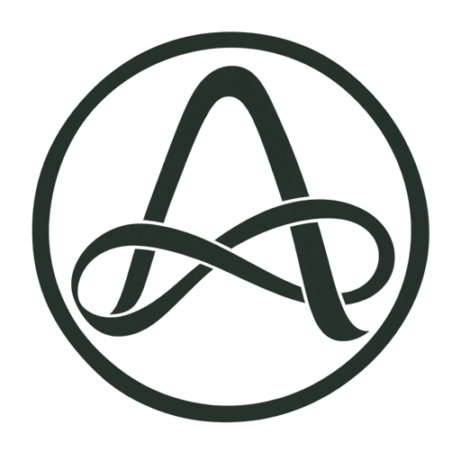

I proved that my household qualified for emergency support without uploading our names, income statement, or address to another database.
Protected claimantEmergency relief program

ALETHIAPROOF WITHOUT EXPOSURE Check eligibility ↗Private aid. Public trust.
Prove you qualify for support without exposing who you are, where you live, or what you have been through.
The Alethia story
Most aid systems ask vulnerable people to trade privacy for access. Alethia changes the exchange. In this working prototype, private answers remain on your device while a signed commitment records only the minimum program outcome.
No public identity. No visible documents. No permanent trail of your circumstances.
Truth, gently revealed.
I proved that my household qualified for emergency support without uploading our names, income statement, or address to another database.
Protected claimantEmergency relief program
We can show donors that every claim was valid and unique while protecting the people our program exists to serve.
Program coordinatorCommunity food network
The audit gives me the fact I need—rules were followed—without handing me a folder full of personal information I should never possess.
Independent auditorImpact assurance partner
One private journey
Each pathway keeps sensitive evidence shielded while publishing only the minimum proof a program needs.
Answer a program’s requirements locally. The current demo converts those answers into a simple yes-or-no attestation without sending the underlying responses.
Explore this path →A privacy-safe nullifier confirms that a benefit has been claimed once. Duplicate attempts fail without creating a public identity trail.
See claim protection →Programs publish trustworthy totals—valid claims, resources delivered, communities reached—while every beneficiary remains shielded.
View proof notes →When oversight is required, the claimant chooses exactly which fact to disclose, to whom, and for how long. Nothing more is revealed.
Audit with dignity →A planned field mode will prepare encrypted claims offline and synchronize them when connectivity returns.
Bring Alethia to the field →A kinder proof layer
Build aid programs that can prove their impact without exposing the lives behind the numbers.
The proof desk
Privacy technology can feel complicated. Alethia reduces it to one promise: prove what matters, protect everything else.
Talk to a program guide →Your program receipt and public proof status. Sensitive documents remain encrypted in your private state, not on a public ledger.
No public profile is required. Program-specific nullifiers stop repeat claims without creating a reusable identifier across programs.
You decide. A verifier receives only the fact the policy requests, such as “eligible,” never the documents used to prove it.
Offline synchronization is on the product roadmap. This hosted prototype currently requires a connection to submit its signed commitment.
Live demo ledger · updates after accepted and duplicate test claims
Field report
Human dignity and transparent impact are not opposing goals. Alethia’s dual-state design lets programs verify the truth without collecting another vulnerable-data archive.
Read the field noteProtocol note
See how selective disclosure gives an auditor one necessary fact—and nothing else.
Midnight roadmap
How this signed prototype maps to a future Compact contract with shielded data and verifiable outcomes.
For claimants
Check a program, prepare a private proof, and follow your claim without creating a public dossier.
Check eligibilityFor programs
Configure eligibility rules, prevent duplicate claims, and publish credible aggregate results.
Design a programWorking claim lab
Your answers stay on this device. Alethia reveals only an eligibility result and a program-scoped nullifier—never a reusable public identity.
One credential, unlinkable program claims.
Food, medical, and shelter claims derive different nullifiers. Raw age, income, household, jurisdiction, credential ID, and wallet secret remain private.
For field teams and program leaders
Tell us what you need to verify. We’ll map the smallest possible disclosure.
A private path forward
Alethia makes aid accountable to the public and respectful of the person.
Begin a private claimThe Alethia story · 60 seconds
To receive aid, people are often asked to expose the most private parts of their lives.
Names. Addresses. Documents. One more vulnerable-data archive.
Alethia changes the exchange: your evidence stays protected with you.
A private proof checks the program rule without revealing the facts behind it.
A program-specific marker proves the claim is unique—without creating a public identity.
The program receives only what it needs: eligible, unique, and verifiable.
Programs can prove impact while the number of private fields published stays zero.
Truth, gently revealed. Begin a private claim with Alethia.